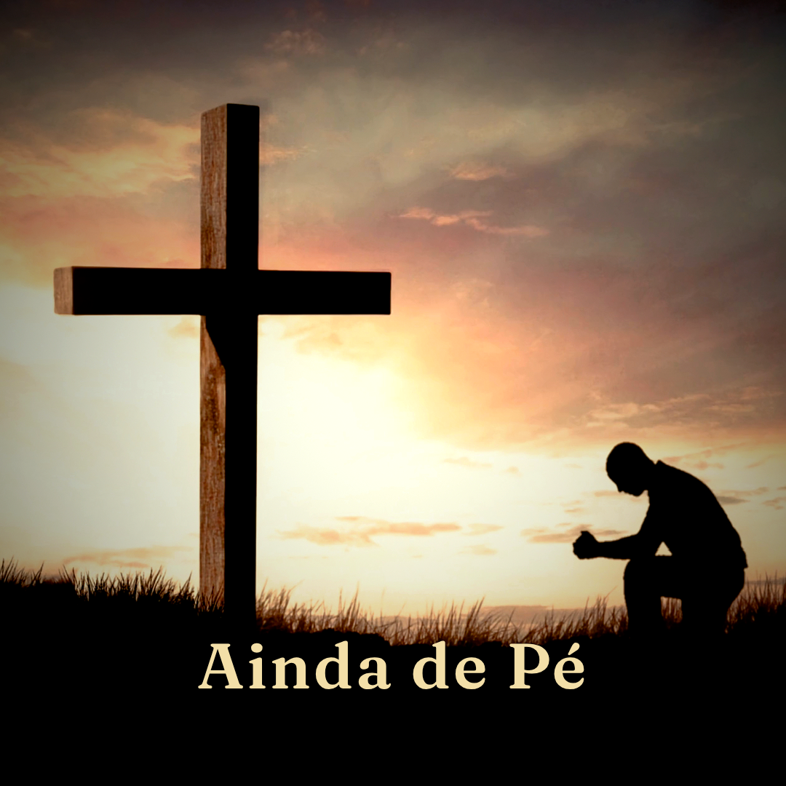

49
Ainda há esperança música
⬇ Baixar vídeoSe você pensou em desistir essa semana… escuta isso. 🙏 Comente AINDA HÁ ESPERANÇA se essa palavra é pra você. 🎵 Ainda Há Esperança #naodesista #esperanca #motivacao #fe #aindadepe

Se você pensou em desistir essa semana… escuta isso. 🙏 Comente AINDA HÁ ESPERANÇA se essa palavra é pra você. 🎵 Ainda Há Esperança #naodesista #esperanca #motivacao #fe #aindadepe
Mesmo quando eu não entendo, Tu és bom. 🤍 Comente TU ÉS BOM se você também é grata. 🎵 Tu És Bom #tuesbom #gratidao #musicagospel #fe #aindadepe
Ontem eu chorei, hoje eu tô sorrindo. 🙌 Hoje tem vitória! Comente HOJE TEM VITÓRIA e recebe! 🎵 Hoje Tem Vitória #hojetemvitoria #musicagospel #alegria #fe #aindadepe
Sorte acaba. Fé permanece. 🙏 Quem confia em Deus não tem plano B. Comente FÉ É DECISÃO se você tá firme. 🎵 Fé é Decisão #feedecisao #trapgospel #musicagospel #fe #aindadepe
Nenhum vídeo na fila. Tudo postado! 🙌
Se o download abrir o vídeo em vez de baixar: toque e segure no vídeo → Baixar/Salvar.
"Já postei": com a chave do GitHub conectada, apaga o vídeo do site para sempre (~1 min), sem login — no modo anônimo, abra o site pelo link favorito com a chave.
Sem a chave, só esconde o vídeo neste navegador (no modo anônimo, volta ao fechar a aba).
⚙ Conectar ao GitHub